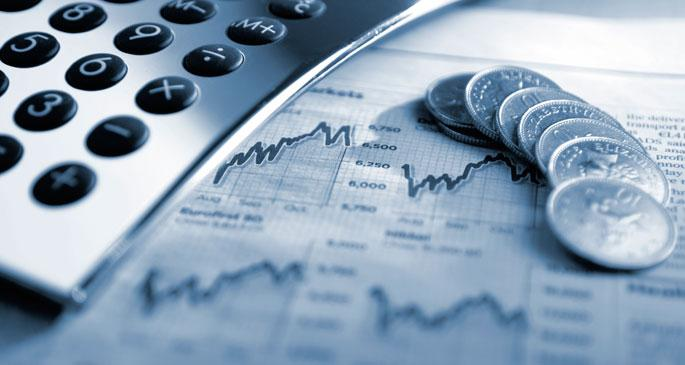

Ekonomik Yapı İtalya, IMF 2016 yılı tahminlerine göre 1,85 trilyon dolar (nominal) GSYİH ile dünyanın 8. Avrupa’nın ise 4. (Almanya, Fransa ve İngiltere’nin ardından) en büyük ekonomisidir. 2016 yılında (satın alma gücü paritesine göre) kişi başına GSYİH’sı tahmini olarak 36.313 dolardır ve bu değerle dünya sıralamasında 37. sırada bulunmaktadır. 2016 yılında ülke GSYİH’sının % 2,1’ini tarım, % 24,1’ini sanayi, % 73,8’ini hizmetlersektörü oluşturmaktadır. UNDP 2015 yılı İnsan Gelişimi Endeksi’ne göre, İtalya çok yüksek insan gelişimine sahip ülkeler arasında sınıflandırılarak 27. sırada yer almaktadır. Avrupa Birliği’nin kurucu üyesi olan İtalya, aynı zamanda ABD, Almanya, İngiltere, Fransa, Kanada, Japonya ve Rusya ile birlikte G8 adı verilen sanayileşmiş ülkeler grubuna dahildir. İtalya, II. Dünya Savaşı sonrasında savaşın getirdiği ağır ekonomik çöküntüye maruz kalmıştır. Takip eden dönemde ABD’nin uyguladığı Marshall Planı ile sanayi tesislerini yeniden yapılandırma konusunda ihtiyaç duyduğu dış sermayeyi elde eden İtalyan ekonomisi, sanayi sektöründe istihdam edilecek işgücünü de ülkenin güney kesimlerinden gelen göçmenlerden karşılamıştır. 1950-1960 döneminde bu iki önemli itici gücün birleşmesi sonucunda zayıf bir tarımsal ekonomiden güçlü bir sanayileşmiş ekonomiye dönüşüm gerçekleştirilmiştir. 1959 ve takip eden üç yıl boyunca ortalama olarak yıllık % 6,3 oranında ekonomik büyüme gerçekleşmiş ve bu dönem daha sonraları İtalyan ekonomik mucizesi (il boom economico) olarak anılmaya başlanmıştır. 1957 yılında AB’nin temelini oluşturan Avrupa Ekonomik Topluluğu (AET)’nun kurulmasıyla başlayan süreçte Altılar olarak anılan Fransa, Almanya, İtalya, Hollanda, Belçika ve Lüksemburg’un oluşturduğu gümrük birliği sayesinde aralarındaki ticareti sürekli olarak geliştiren söz konusu ülkeler aynı zamanda Avrupa’nın ekonomik gelişimine de hız kazandırmıştır.
Ekonomik Performans 2014 yılında reel olarak % 0,3 küçülen ekonomi 2015 yılında % 0,76 oranında büyümüştür. IMF'in 2016 yılı tahmini ise ekonominin % 0,7 büyümesidir. 2020 yılındaki büyüme beklentisi ise reel olarak % 0,85 olarak tahmin edilmektedir. İtalya 2015 yılında 50,7 milyon turist ile dünyanın en fazla turist çeken 5. ülkesidir. 2015 yılında turizm gelirlerinde bir önceki yıla göre % 13,3 azalış yaşanmış ve turizm gelirleri 45,5 milyar dolardan 39,4 dolara gerilemiştir (UNWTO World Tourism Barometer 2016). 2014 yılında % - 0,23 olarak gerçekleşen TÜFE oranı 2015’te % 0,11 olarak gerçekleşmiş olup 2016 yılı için IMF'in tahmini % - 0,05'dir. 2014 yılında % 12,6 olarak gerçekleşen işsizlik oranının ise 2015 için % 11,9, 2016 için % 11,5 olması beklenmektedir. The Heritage Foundation tarafından yapılan 2017 Ekonomik Serbesti Endeksine göre (Index of Economic Freedom) İtalya dünyada 79, 43 Avrupa ülkesi arasında 34’üncü sırada yer almaktadır. Diğer AB ülkelerine kıyasla İtalya’da verimsiz devlet bürokrasisi ve yolsuzluğun yanı sıra ağır vergi yükü ve yüksek oranlı kamu harcamaları bulunmaktadır.Tekstil, mobilya ve beyaz eşya gibi önemli sektörlerdeki firmalar, düşük maliyetle üretim yapan Çin firmaları karşısında rekabet edemez duruma gelmektedirler. İtalya güçlü ekonomik yapısını, daha çok aile şirketi olan ve bu aileler tarafından yönetilen, sanayi grupları içerisinde bir araya gelmiş olan küçük ve orta ölçekli firmalara borçludur. Bu firmalar çeşitli kapital ve tüketim ürünleri kategorilerinde uzmanlıklar geliştirmişlerdir. İtalya ekonomisinde imalat sektörü çok güçlüdür. Ana sanayiler arasında otomotiv, gemi yapımı, kimyasallar, mobilya, giyim ve tekstil, deri eşya ve ayakkabı, gıda prosesi, seramik ürünler, parçalar ve makineleri sayılabilir. İtalyan sanayisinin en gelişmiş sektörleri arasında mekanik, yapı, kimya ve taşıt araçları sanayi başta gelmektedir. İtalya’nın en önemli gücü diğer sanayileşmiş ülkelere oranla küçük ve orta ölçekli firma sayısının fazlalığıdır. İSTAT’ın İtalya’nın üretim yapısını inceleyen raporunda, İtalya’da 4,5 milyon şirketin faaliyet gösterdiği, % 95’inin mikro ölçekli şirket olduğu (% 99'u ailelere ait) ve istihdamın % 46’sına denk gelen 17,9 milyon kişiyi istihdam ettikleri belirtilmektedir. Şirket bünyesinde çalışan sayısının ortalama 4 kişiden oluşurken, sadece % 0,08’inin 250 den fazla çalışanı bulunmaktadır. Büyük ölçekli firmalar daha çok Kuzey ve Orta İtalya’da toplanırken Güney İtalya’da daha çok tarım ve turizm alanında faaliyet gösteren küçük işletmeler faaliyet göstermektedir. İtalyan ekonomisinin bir diğer gücü ise “sanayi bölgeleri” olarak adlandırılan ve aynı sektörde, her biri üretim aşamalarının başka bir dalında uzmanlaşmış birçok firmanın sıkı ekonomik ilişkiler içerisinde bir arada bulunduğu alanların gelişimidir. Bugün İtalya’da 200’den fazla sanayi bölgesi mevcuttur.